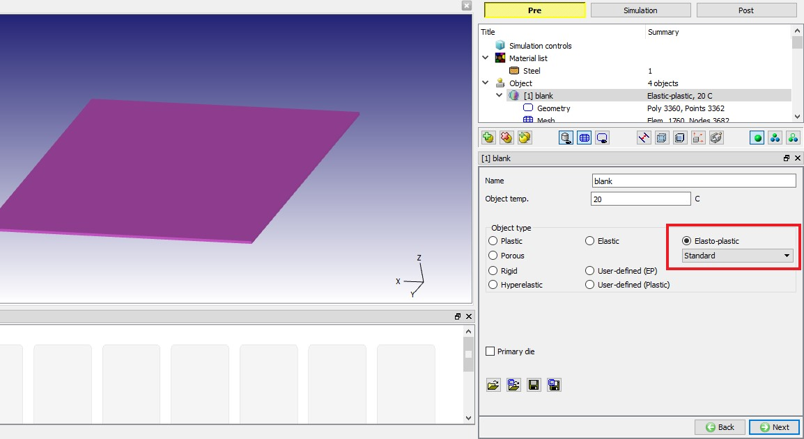
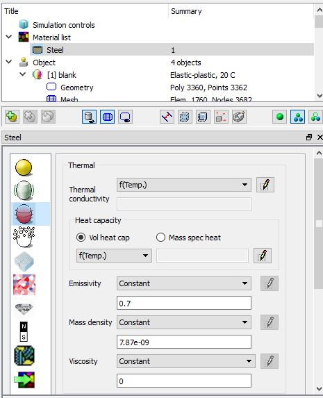
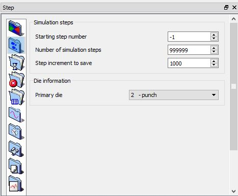
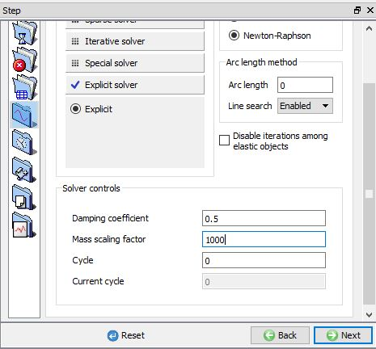
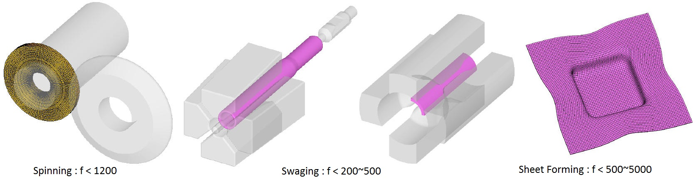

With 4 additional setups user can use the Explicit solver those are,
Step 1: Object type should be “Elasto-plastic”.
From object general settings window select object type to Elasto-Plastic as shown in Fig. XVIII.1.

Object General settings Window
Step 2: Mass density should be defined.
Make sure that Mass Density value defined from material thermal properties can be accessed from object material window by using the  button. Material
button. Material thermal
thermal mass density window is as shown in Fig. XVIII.2.
mass density window is as shown in Fig. XVIII.2.
Note that the English unit system density values published in literature typically represent weight density, not mass density. Please review Section 10.3.4. Mass density to understand the requirements for defining mass density in DEFORM.

Object Material Thermal properties editing window
Step3: Set “the number of steps” and “step increment to save” as big numbers.
From Simulation Controls  Simulation Steps tab define Number of Steps and Step increment to save as shown in Fig. XVIII.3.
Simulation Steps tab define Number of Steps and Step increment to save as shown in Fig. XVIII.3.

Simulation control window Steps tab in export mode
Step4: Set mass scaling factor and damping. Newton-Raphson iteration method should be selected.
From Simulation Controls  Iteration tab set Mass scaling factor and Damping coefficient for explicit solver and select Newton-Rapson Iteration method as shown in Fig. XVIII.4.
Iteration tab set Mass scaling factor and Damping coefficient for explicit solver and select Newton-Rapson Iteration method as shown in Fig. XVIII.4.

Simulation control window Iteration tab in expert mode
Selecting Mass Scaling Factor Metal Forming Processes:
To select the mass scaling factor,
Run multiple whole (or partial) simulations with different speed of process.
Compare the results (deformation, stress and strain) with implicit or available measured data if possible. Filter out the obvious case of excessive deformation due to dynamic effect.
Mass scaling factors from previous examples (See Fig. XVIII.5.)
Rotary spinning : 300 ~ 1200, Rotary swaging : 200 ~ 500
Sheet forming : 500 ~ 5000
Backward extrusion : 10 ~ 30

Mass Scaling factor for few forming processes from previous examples